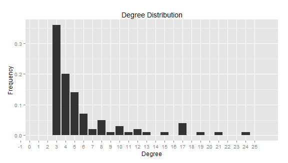

Scale-free
In social networks, there are always a few people whose role are
hubs, where they are connected to a much larger
amount of people than average. On a degree distribution
graph , this would appear as a nice power curve:

Notice that while most of the points have 3 to 6 connections, the
hubs have upwards of 20! This property is called scale-free.